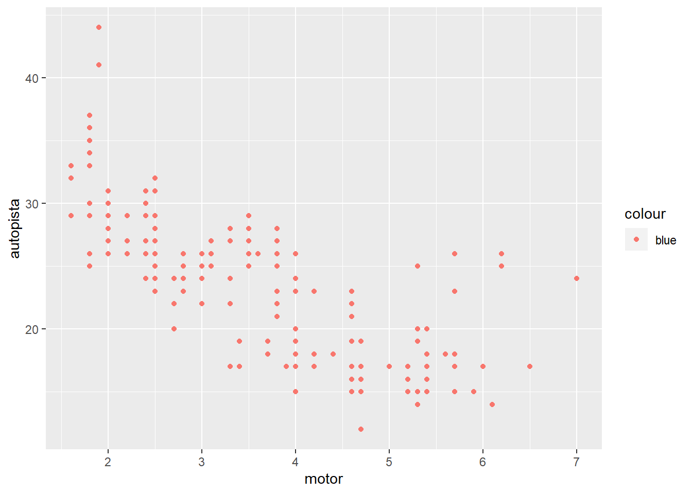
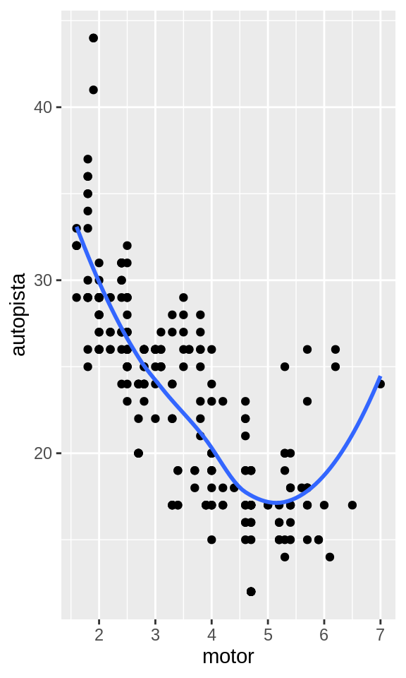
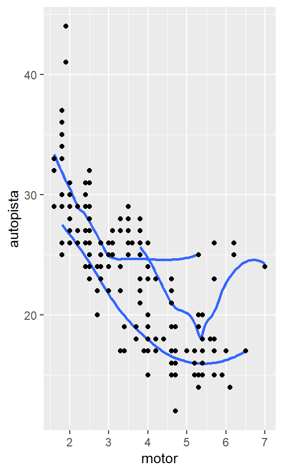
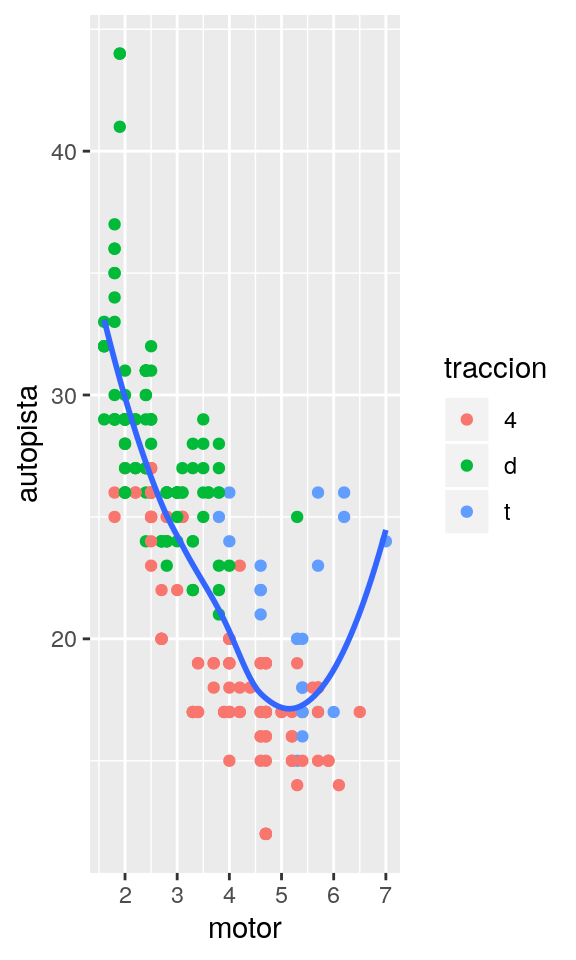
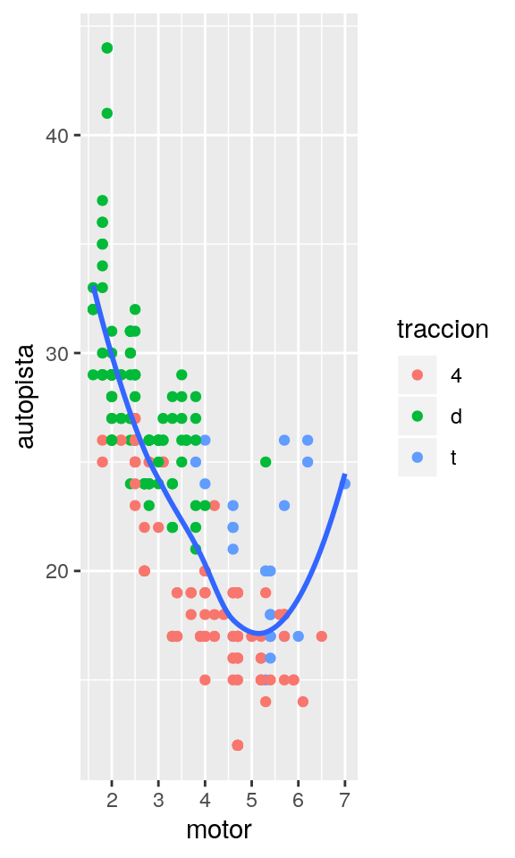
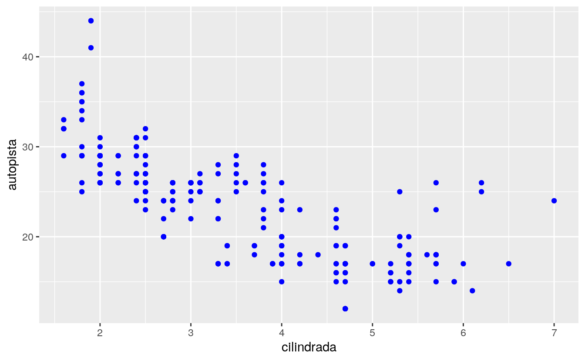
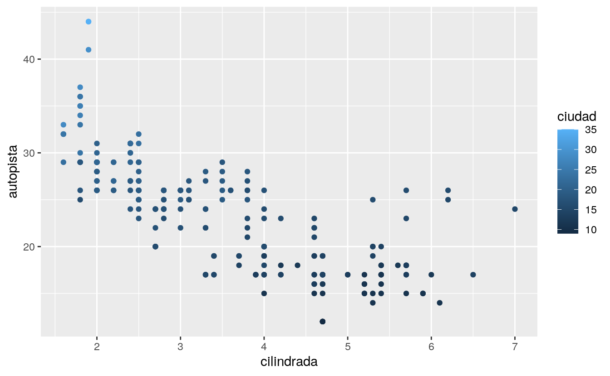

2 Visualización de datos
2.2 Primeros pasos
2.2.1 Ejercicios
Corre
ggplot(data = millas). ¿Qué observas?¿Cuántas filas hay en
millas? ¿Cuántas columnas?¿Qué describe la variable
traccion? Lee la ayuda de?millaspara encontrar la respuesta.Realiza un gráfico de dispersión de
autopistaversuscilindros.¿Qué sucede cuando haces un gráfico de dispersión de
claseversustraccion? ¿Por qué no es útil este gráfico?
2.3 Mapeos estéticos
2.3.1 Ejercicios
¿Qué no va bien en este código? ¿Por qué hay puntos que no son azules?

¿Qué variables en
millasson categóricas? ¿Qué variables son continuas? (Sugerencia: escribe?millaspara leer la documentación de ayuda para este conjunto de datos). ¿Cómo puedes ver esta información cuando ejecutasmillas?Asigna una variable continua a
color,size, yshape. ¿Cómo se comportan estas estéticas de manera diferente para variables categóricas y variables continuas?¿Qué ocurre si asignas o mapeas la misma variable a múltiples estéticas?
¿Qué hace la estética
stroke? ¿Con qué formas trabaja? (Sugerencia: consultar?geom_point)¿Qué ocurre si se asigna o mapea una estética a algo diferente del nombre de una variable, como ser
aes(color = motor < 5)?
2.4 Separar en facetas
2.4.1 Ejercicios
Qué ocurre si intentas separar en facetas a una variable continua?
¿Qué significan las celdas vacías que aparecen en el gráfico generado usando
facet_grid(traccion ~ cilindros)? ¿Cómo se relacionan con este gráfico?¿Qué gráfica el siguiente código? ¿Qué hace
.?Mira de nuevo el primer gráfico en facetas presentado en esta sección:
ggplot(data = millas) + geom_point(mapping = aes(x = motor, y = autopista)) + facet_wrap(~ clase, nrow = 2)¿Cuáles son las ventajas de separar en facetas en lugar de aplicar una estética de color? ¿Cuáles son las desventajas? ¿Cómo cambiaría este balance si tuvieras un conjunto de datos más grande?
Lee
?facet_wrap. ¿Qué hacenrow? ¿Qué hacencol? ¿Qué otras opciones controlan el diseño de los paneles individuales? ¿Por quéfacet_grid()no tiene argumentosnrowyncol?Cuando usas
facet_grid(), generalmente deberías poner la variable con un mayor número de niveles únicos en las columnas. ¿Por qué?
2.5 Objetos geométricos
2.5.1 Ejercicios
¿Qué geom usarías para generar un gráfico de líneas? ¿Un diagrama de caja? ¿Un histograma? ¿Un gráfico de área?
Ejecuta este código en tu mente y predice cómo se verá el output. Luego, ejecuta el código en R y verifica tus predicciones.
¿Qué muestra
show.legend = FALSE? ¿Qué pasa si lo quitas? ¿Por qué crees que lo usé antes en el capítulo?¿Qué hace el argumento
seengeom_smooth()?¿Se verán distintos estos gráficos? ¿Por qué sí o por qué no?
Recrea el código R necesario para generar los siguientes gráficos:

 


2.6 Transformaciones estadísticas
2.6.1 Ejercicios
¿Cuál es el geom predeterminado asociado con
stat_summary()? ¿Cómo podrías reescribir el gráfico anterior para usar esa función geom en lugar de la función stat?¿Qué hace
geom_col()? ¿Cómo es diferente ageom_bar()?La mayoría de los geoms y las estadísticas vienen en pares que casi siempre se usan en conjunto. Lee la documentación y has una lista de todos los pares. ¿Qué tienen en común?
¿Qué variables calcula
stat_smooth()? ¿Qué parámetros controlan su comportamiento?En nuestro gráfico de barras de proporción , necesitamos establecer
group = 1. ¿Por qué? En otras palabras, ¿cuál es el problema con estos dos gráficos?
2.7 Ajustes de posición
2.7.1 Ejercicios
¿Cuál es el problema con este gráfico? ¿Cómo podrías mejorarlo?

¿Qué parámetros de
geom_jitter()controlan la cantidad de ruido?Compara y contrasta
geom_jitter()congeom_count()¿Cuál es el ajuste de posición predeterminado de
geom_boxplot()? Crea una visualización del conjunto de datos demillasque lo demuestre.
2.8 Sistemas de coordenadas
2.8.1 Ejercicios
Convierte un gráfico de barras apiladas en un gráfico circular usando
coord_polar().¿Qué hace
labs()? Lee la documentación.¿Cuál es la diferencia entre
coord_quickmap()ycoord_map()?¿Qué te dice la gráfica siguiente sobre la relación entre la ciudad y la
autopista? ¿Por qué escoord_fixed()importante? ¿Qué hacegeom_abline()?ggplot(data = millas, mapping = aes(x = ciudad, y = autopista)) + geom_point() + geom_abline() + coord_fixed()